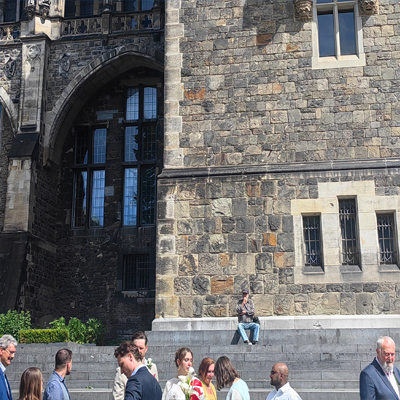

在欧洲每个国家我都见过流浪汉,但是德国的流浪汉看起来过得最好,且人数最多.他们有时会一起坐在超市门口,有时候和本地人闲聊,有时坐在台阶上吃着快餐.我在某个公交车站见过一个流浪汉吃着盒装蔬菜沙拉,实际上在欧洲这种沙拉比含肉食快餐如卷饼或三明治明显更贵,说明他并不是很饥饿、且注意饮食全面、补充维生素.
流浪汉和乞丐是两回事,虽然有交集,但是不少德国流浪汉并不乞讨,而乞讨的人却不一定是流浪的,可能有固定居所.我在亚琛见过最年轻的乞丐,那是一个13岁左右的青少年,在农贸市场旁边落寞地坐着乞讨,但是他看起来打扮干净,应该有住的地方.
按理说德国的流浪汉应该会有政府救助金,外加德国的物价真的很低,我在德国时的一顿饭经常是一个果酱面包、一个碱水面包作主食,加起来三欧元出头,而在芬兰随便一个面包就是10欧左右.单说吃的话流浪汉们应该开销不大,住宿有夜间收容所(但是床位很有限、大多人还是得露宿街头和桥洞),医疗的话据说有政府保障通道、但是只能应对一些基本小毛病比如感冒和感染.
德国的流浪汉很多都是迫不得已,因为偶然的一次房租断缴就很可能导致他们失去固定住所,进而无法找到合法工作,进入一个流浪循环.话说回来由于在欧洲偶尔的极端转机时间比如凌晨06:30,我也曾当过"流浪汉",就地而卧睡在大厅的角落,算是练就了到哪躺着都能睡着的本领.

德国教堂前的婚礼.